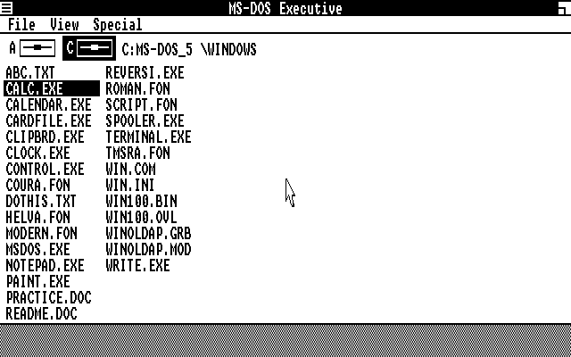
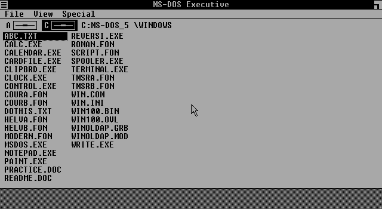
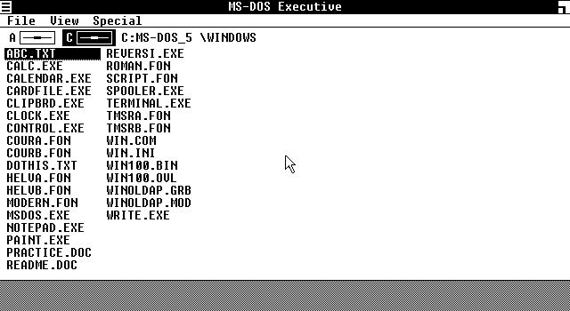
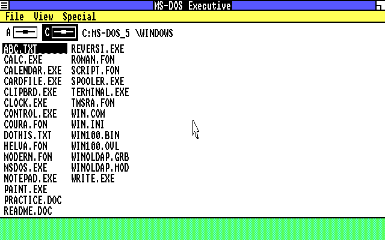
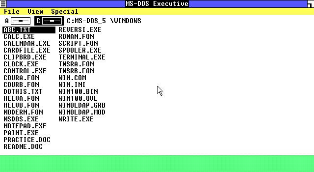

IBM (or compatible) Color/Graphics Adapter or COMPAQ Personal Computer

Enhanced Graphics Adapter (EGA) with Monochrome Personal Computer Display

EGA with Enhanced Color Display (Black and White only)

EGA with Enhanced Color Display or Personal Computer Color Display

EGA (more than 64K) with Enhanced Color Display
Graphics adapter modes in Windows 1.01